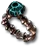
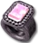
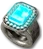
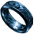
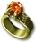

Heyday
Wizzy Ring
Ring
Required Level: 61
+X to Mana (X = 2 x character level)
+15% Mana Regeneration
+15% Increased Maximum Mana
+75% to All Resistances
Indestructible
+50% Faster Cast Rate
Unique Ring
Wizzy Ring
- Type
- Ring
- Base
- Ring
- Required level
- 61
- Item level
- 70
Other unique Rings

Nagelringlevel 30
Manald Heallevel 15
The Stone of Jordanlevel 29 Constricting Ringlevel 95
Constricting Ringlevel 95 Bul-Kathos' Wedding Bandlevel 58
Bul-Kathos' Wedding Bandlevel 58 Dwarf Starlevel 45
Dwarf Starlevel 45
Raven Frostlevel 45 Nature's Peacelevel 69
Nature's Peacelevel 69
Wisp Projectorlevel 76 Carrion Windlevel 60
Carrion Windlevel 60- Slinglevel 50
- Opalveinlevel 50